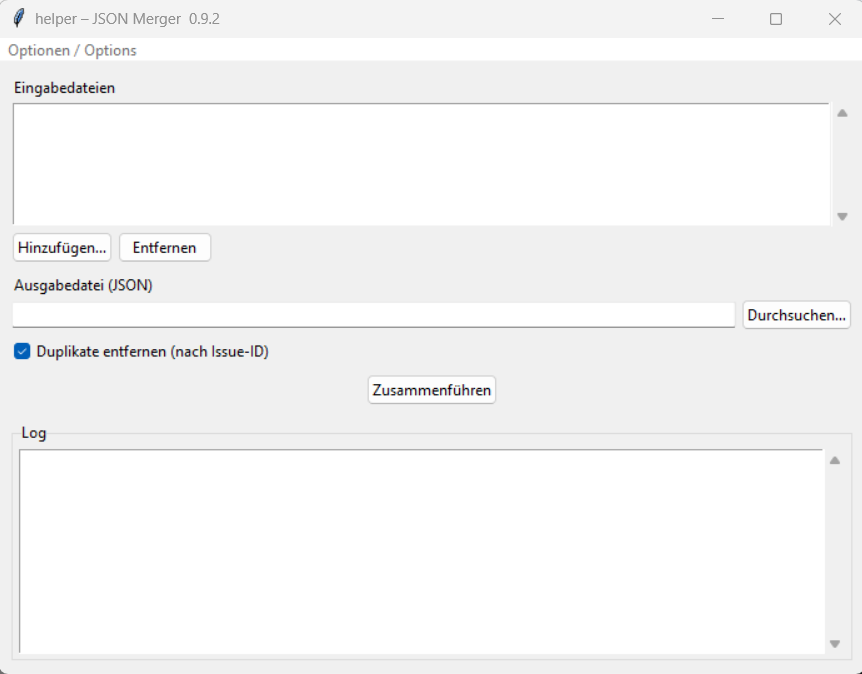

helper¶
The helper module contains utility tools for the SituationReport toolsuite.
Currently available: JSON Merger — combines multiple Jira REST API JSON files into one.
Start:
Or via the start script in the portable package:
- Windows: Helper.bat
- macOS: Helper.command
- Linux: Helper.sh
Manuals¶
| Language | Download |
|---|---|
| Deutsch (DE) | Benutzerhandbuch |
| English (EN) | User Manual |
| Română (RO) | Manual de Utilizator |
| Português (PT) | Manual do Utilizador |
| Français (FR) | Manuel d'utilisation |
JSON Merger¶
Problem¶
Jira REST API queries return at most 1000 issues per request. For larger projects,
multiple paginated requests are needed, each producing a separate JSON file.
Before processing with transform_data, these files must be merged into one.
GUI¶

┌──────────────────────────────────────────────────┐
│ helper – JSON Merger v0.9.8 │
├──────────────────────────────────────────────────┤
│ Input files │
│ ┌────────────────────────────────────────────┐ │
│ │ /path/to/project_0.json │ │
│ │ /path/to/project_1000.json │ │
│ │ /path/to/project_2000.json │ │
│ └────────────────────────────────────────────┘ │
│ [Add…] [Remove] │
│ │
│ Output file (JSON) │
│ [/path/to/merged.json ] [Browse…] │
│ │
│ ☑ Remove duplicates (by issue id) │
│ │
│ [Merge] │
│ ┌────────────────────────────────────────────┐ │
│ │ Log │ │
│ │ Reading: project_0.json │ │
│ │ 533 issues found. │ │
│ │ Reading: project_1000.json │ │
│ │ 412 issues found. │ │
│ │ Merged 2 file(s) → 945 issues → merged.json│ │
│ │ --- Done --- │ │
│ └────────────────────────────────────────────┘ │
└──────────────────────────────────────────────────┘
CLI¶
python -m helper file1.json file2.json file3.json --output merged.json
python -m helper file1.json file2.json --output merged.json --no-dedup
| Argument | Description |
|---|---|
inputs (positional) |
One or more input JSON files |
--output FILE |
Output file path (required) |
--no-dedup |
Disable deduplication |
Deduplication¶
By default, issues with the same id field appear only once in the output.
This is important when Jira queries overlap in time and return the same issues
more than once. A warning is logged for each duplicate found.
Use --no-dedup to keep all issues — useful if the id fields are generated
values rather than real Jira IDs.
Output format¶
The output file matches the Jira REST API format and can be processed directly
by transform_data:
Workflow¶
# 1. Merge JSON files
python -m helper page1.json page2.json --output merged.json
# 2. Process with transform_data
python -m transform_data merged.json --workflow workflow.txt
Architecture¶
helper/
├── __init__.py empty
├── __main__.py dispatcher (GUI / CLI)
├── merger.py core logic: merge_json_files()
├── cli.py run_merge() + argparse CLI
└── gui.py tkinter GUI
Tests¶
- Unit tests (
tests/helper/unit/): merge logic, deduplication, envelope fields, edge cases - Acceptance tests (
tests/helper/acceptance/): end-to-end withtransform_data